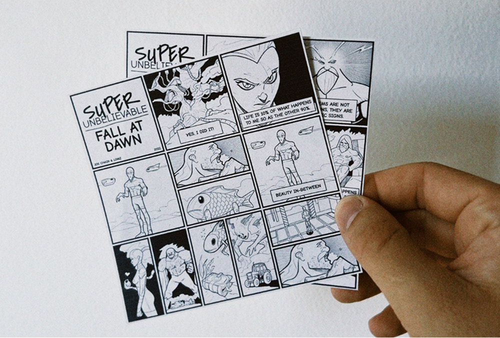
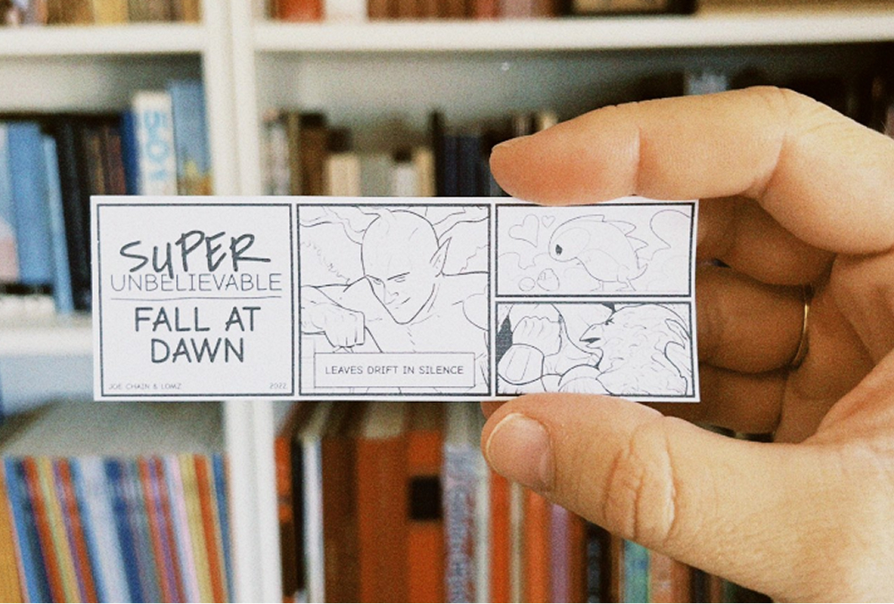
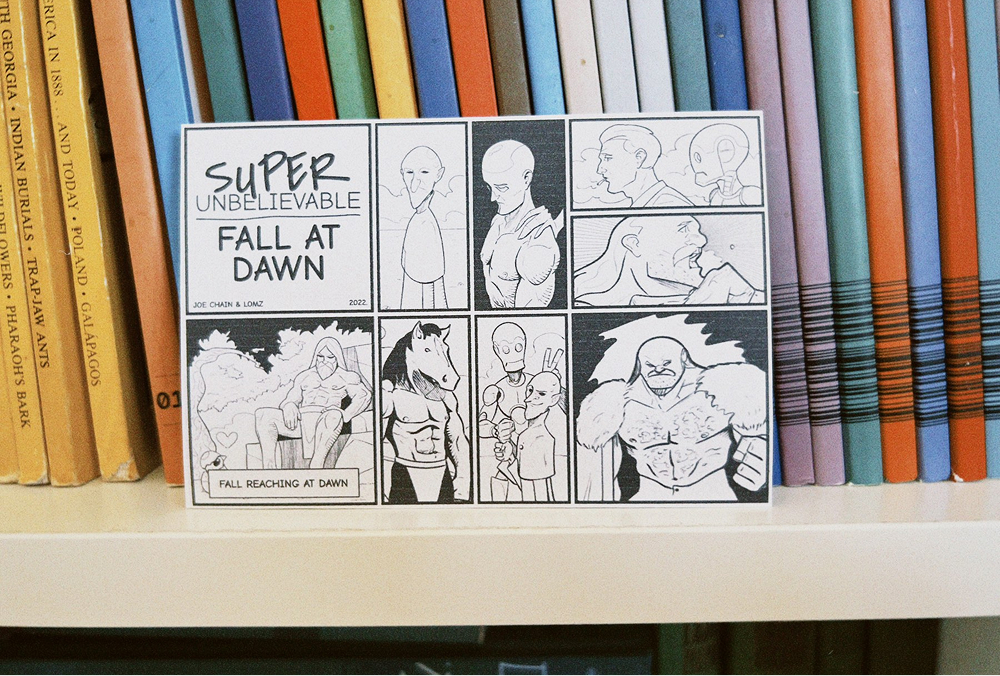
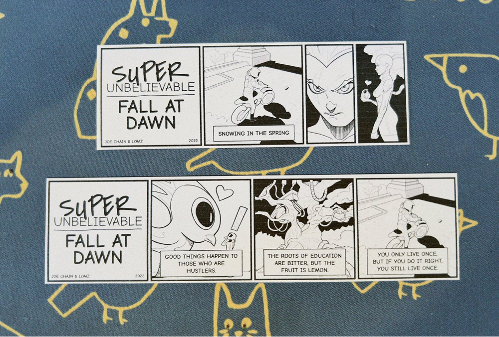
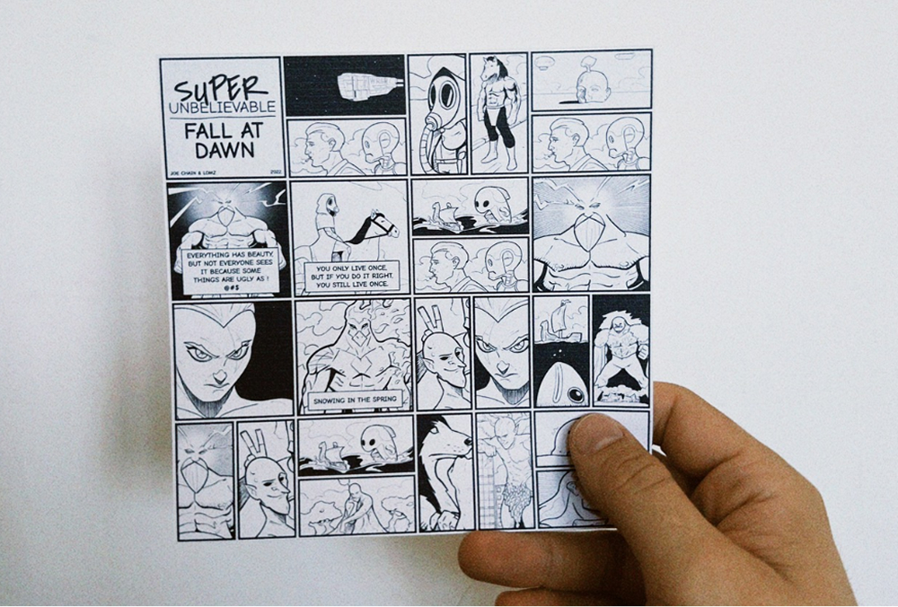

Super Unbelievable Fall at Dawn
In collaboration with the amazing Joe Chain, we created a generative comic generator. Joe handled the artwork while I worked on the code. The project was released as an NFT on the fx(hash) platform.





